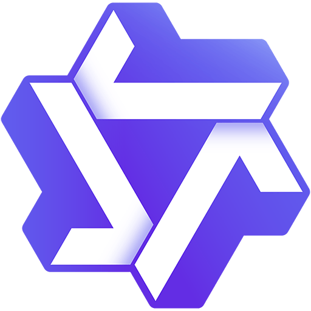

I am a Ph.D. student at The University of Hong Kong, majoring in Computer Science. I am also a founder member of Deep Research Team at  Tongyi Lab. Previously,
I received my Master's degree in Computer Technology from Tsinghua University in 2024 and obtained my B.Eng degree in Software Engineering from Xidian University in 2021.
I was a research intern supervised by Jieming Zhu and at Tencent mentored by Junwei Pan and Ximei Wang.
My research directions are Data Mining and Deep Research Agent.
News
[Sep. 2025] We release our open-source and powerful deep research agent Tongyi DeepResearch! Please see the tech blog for details. Our model is available at huggingface and
modelscope.
[Sep. 2025] We release our work Scaling Agents via Continual Pre-training!
[Aug. 2025] Our work ImportSnare was accepted by ACM CCS 2025. 🎉
[Jan. 2025] One paper about unlearnable data was accepted by ICLR 2025. 🤩 See you in Singapore!
[July. 2024] Our paper ERASE was accepted by CIKM 2024. Congrats to Ling-Hao Chen!
Research Experiences
Tongyi Lab (Deep Research Team), Research Intern (Founder Member). May. 2025 -
The University of Hong Kong, Research Assistant. Nov. 2023 - Aug. 2024
Towards General Agentic Intelligence via Environment Scaling
Runnan Fang, Shihao Cai, Baixuan Li, Jialong Wu, Guangyu Li, Wenbiao Yin, Xinyu Wang, Xiaobin Wang, Liangcai Su, Zhen Zhang, et al.
Arxiv 2025. [📄 Paper]
R1-Fuzz: Specializing Language Models for Textual Fuzzing via Reinforcement Learning
Jiayi Lin, Liangcai Su, Junzhe Li, Chenxiong Qian.
Arxiv 2025. [📄 Paper][ GitHub][🤗 HuggingFace]
ImportSnare: Directed "Code Manual" Hijacking in Retrieval-Augmented Code Generation
Kai Ye, Liangcai Su, Chenxiong Qian.
ACM CCS 2025. [📄 Paper][🏠 Homepage]
How Far Are We from True Unlearnability?
Kai Ye*, Liangcai Su*, Chenxiong Qian.
ICLR 2025. [📄 Paper]
STEM: Unleashing the Power of Embeddings for Multi-task Recommendation Liangcai Su*, Junwei Pan*, Ximei Wang, Xi Xiao, Shijie Quan, Xihua Chen, Jie Jiang. AAAI 2024. [📄 Paper][ GitHub]
ERASE: Error-Resilient Representation Learning on Graphs for Label Noise Tolerance
Ling-Hao Chen, Yuanshuo Zhang, Taohua Huang, Liangcai Su, Zeyi Lin, Xi Xiao, Xiaobo Xia, Tongliang Liu.
CIKM 2024. [📄 Paper][🏠 Homepage][ GitHub]
Invisibility Cloak: Proactive Defense Against Visual Game Cheating
Chenxin Sun, Kai Ye, Liangcai Su, Jiayi Zhang, and Chenxiong Qian.
USENIX Security 2024. [📄 Paper][🏠 Homepage]
A Survey of Generative Techniques for Spatial-Temporal Data Mining
Qianru Zhang, Haixin Wang, Cheng Long, Liangcai Su, Xingwei He, Jianlong Chang, Tailin Wu, Hongzhi Yin, Siu-Ming Yiu, Qi Tian and Christian S. Jensen.
Preprint. [📄 Paper]
Multi-interest Learning for Multi-modal Paper Recommendation
Xiaoteng Shen*, Liangcai Su*, Xi Xiao, Yi Li
ICASSP 2024. [📄 Paper]
Beyond Two-Tower Matching: Learning Sparse Retrievable Interaction Models for Recommendation Liangcai Su, Fan Yan, Jieming Zhu, Xi Xiao, Haoyi Duan, Zhou Zhao, Zhenhua Dong and Ruiming Tang.
SIGIR 2023. [📄 Paper]
FinalMLP: An Enhanced Two-Stream MLP Model for CTR Prediction
Kelong Mao, Jieming Zhu, Liangcai Su, Guohao Cai, Yuru Li, Zhenhua Dong.
AAAI 2023. [📄 Paper][ GitHub]
BARS: Towards Open Benchmarking for Recommender Systems
Jieming Zhu, Quanyu Dai, Liangcai Su, Rong Ma, Jinyang Liu, Guohao Cai, Xi Xiao, Rui Zhang.
SIGIR 2022. [📄 Paper][ GitHub][🏠 Homepage]
PEAR: Personalized Re-ranking with Contextualized Transformer for Recommendation
Yi Li, Jieming Zhu, Weiwen Liu, Liangcai Su, Guohao Cai, Qi Zhang, Ruiming Tang, Xi Xiao, Xiuqiang He.
WWW 2022. [📄 Paper]